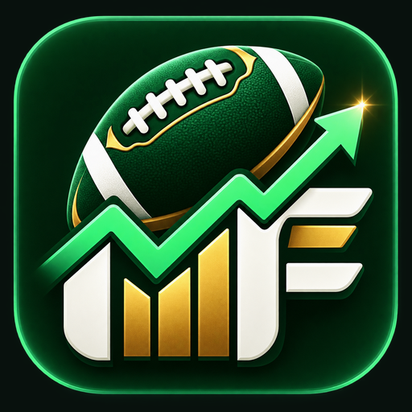

OFFLINE FRANCHISE
Franchise Fantasy
Automatic fantasy scores from the games you play.
Finding your Franchise save…
SAVE COMPATIBILITY
Checking your Franchise save…The original save is never modified.No played-game stats found yet
Finish a Franchise game, return to the Franchise hub, and let Madden save. This screen will refresh automatically.
SUNDAY COMMAND CENTER
Fantasy HQ
FANTASY REDZONE
Latest week
NOTIFICATION CENTER
What needs attention
LEAGUE-WIDE FORM
NFL power rankings
| # | Team | Record | PF | PA | Trend |
|---|
RIVALRY FILE
Head-to-head history
| Opponent | Record | PF | PA |
|---|
THE FRANCHISE ANNUAL
Season Magazine
AWYAway
0FINAL0
HMEHome
LATEST GAME
Fantasy leaderboard
Your save is copied before reading. The original Franchise file is never modified.
FRANCHISE FANTASY
Season Hub
| # | Player | Team | Pos | Games | Total | Avg | High | Last |
|---|
Select a player to open their fantasy game log.
OFFENSIVE IDENTITY
Team Analytics
WHO GETS THE BALL
Passing distribution
| # | Receiver | Pos | Rec | Rec Share | Yds | Yds Share | Y/R | TD | YAC | Drops |
|---|
PERSONNEL USAGE
By position
| Pos | Rec | Share | Yds | TD |
|---|
GAME-BY-GAME
Weekly tendencies
| Week | Matchup | Result | Pass | Rush | Pass Rate | Pass Yds | Rush Yds | Top Receiver | Distribution |
|---|
Distribution uses completed receptions because Madden's game-stat records do not include receiving targets.
ALL 32 TEAM DNA
NFL Team Identities
24 offensive archetypesVolume, efficiency, personnel usage, explosiveness, distribution and quarterback role
20 defensive archetypesPressure, takeaways, run/pass resistance, tackling, scoring prevention and risk
Updating from completed Franchise games
Each club receives three offensive and three defensive identities. They evolve automatically as more Franchise games are completed.
FRANCHISE HISTORY
Records & Awards
SEASON EXCELLENCE
Fantasy leaders
| # | Player | Team | Pos | Games | Total | Avg | High |
|---|
WEEKLY HONORS
Award winners
| Week | Fantasy MVP | QB | Playmaker | D/ST |
|---|
YOUR SEASON STORY
Game recaps
Records cover completed games still stored in this Franchise save. Preseason is excluded.
LEAGUE LAB
Fantasy League
CREATE A LEAGUE
Build your fantasy format
Snake and rolling waivers are the defaults. Auction drafting, FAAB, keeper, and dynasty formats are optional.
| # | Player | NFL | Pos | OVR | Avg | Season | Queue |
|---|
YOUR TEAM
—
Set your starters before playing the next Madden game.START / SIT LAB
Weekly outlook
PLAYER MARKET
Waiver wire
TRADE BLOCK
Negotiate with AI
POSTSEASON
Playoffs & history
LEAGUE OFFICE
Transactions & notifications
COMMISSIONER TOOLS
League controls
No commissioner changes this session.
RACE FOR FIRST
Standings
| # | Fantasy team | Style | W | L | T | PF | PA |
|---|
HEAD TO HEAD
Matchups
TEAM MANAGEMENT
Roster
—| Slot | Player | NFL Team | Pos | OVR | Week | Season | Avg |
|---|
Lineups, transactions, waivers, trades, projections, playoffs, and league history are simulated locally from your Franchise save.
A LIVING FANTASY UNIVERSE
Fantasy World
CREATE THE WORLD
Let the season develop a life of its own
Fictional managers draft players, compete in leagues, react to performances, form rivalries, and keep talking as your Franchise advances.
MY FANTASY TEAM
—
Your starters determine your Fantasy World matchup.WAIVERS
TRADES
YO
Fantasy World is simulated locally. Fictional managers and posts evolve automatically from completed Franchise games.